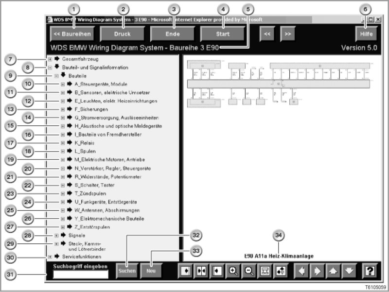

Component and Signal Information From WDS
System Overview of Component Groups in Diagnosis
Note:
For technical reasons associated with the system, the screen shot below has not been translated.
On the "Components" screen from the WDS DVD, the abbreviated designations and components are structured alphabetically.
For technical reasons associated with the system, it is not possible to show the translated version of the screen.
The texts in this screen shot are explained (and therefore translated) in the accompanying text.

The illustration shows the overview of component and signal information on WDS DVD for the E90 (WDS DVD: Wiring Diagram System, i.e. the circuit diagram DVD for BMW diagnosis).
The "Components" section is illustrated in detail.
Note:
"D" for "diagnosis interfaces".
The illustration only shows the component groups for the E90. Other component groups may be shown for other model series. For example, the following model series have the component group "D": E39, E39 and E53. This glossary also contains a separate section for this component group.
Note:
"P" for "display instruments".
The component group "P" is found on the model series E52.
This glossary also contains a separate section for this component group.
Note:
"V" for "semiconductors", "diodes".
The component group "V" is found on the following model series: E38, E39, E46 and R50.
This glossary also has a separate section for this component group.
Item Description
1. Model series
2. Print
3. End
4. Start
5. Model series selected
6. Help
7. Complete vehicle
8. Component and signal information
9. Components
A - Z Component List
10. A Control units, modules
A_Control Modules, Assemblies
11. B Sensors, electrical converters
B_Sensors, Transducers
12. E Lights, electrical heating equipment
E_Lamps, Electrical Heaters
13. F Fuses
F_Fuses
14. G Power supply, gas generators
G_Power Supply
15. H Acoustic and visual warning systems
H_Signal/Indicator Devices (Visual, Acoustic)
16. I Components from BMW suppliers
I_Components of New Systems
17. K Relays
K_Relays
18. L Coils
19. M Electric motors, drives
M_Electric Motors
20. N Amplifiers, regulators, control units
N_Amplifiers, Controllers, Control Modules
21. R Resistors, potentiometers
R_Resistors, Potentiometers
22. S Switches, buttons
S_Switches, Coding Plugs
23. T Ignition coils
T_Ignition Coils
24. U Radio systems, suppressor filters
U_Radio/Interference-Suppression Equipment
25. W Aerials, screening
W_Antennae, Shields
26. Y Electromechanical components
Y_Electromechanical Components
27. Z Blocking circuits, suppressor filters
Z_Interference-Suppression Coils
28. Signals
Signal Glossary
29. Plug connectors, fan connectors and solder connectors
Connector Locations
30. Service functions
31. Enter search string
32. Search
33. New
34. Title of circuit diagram